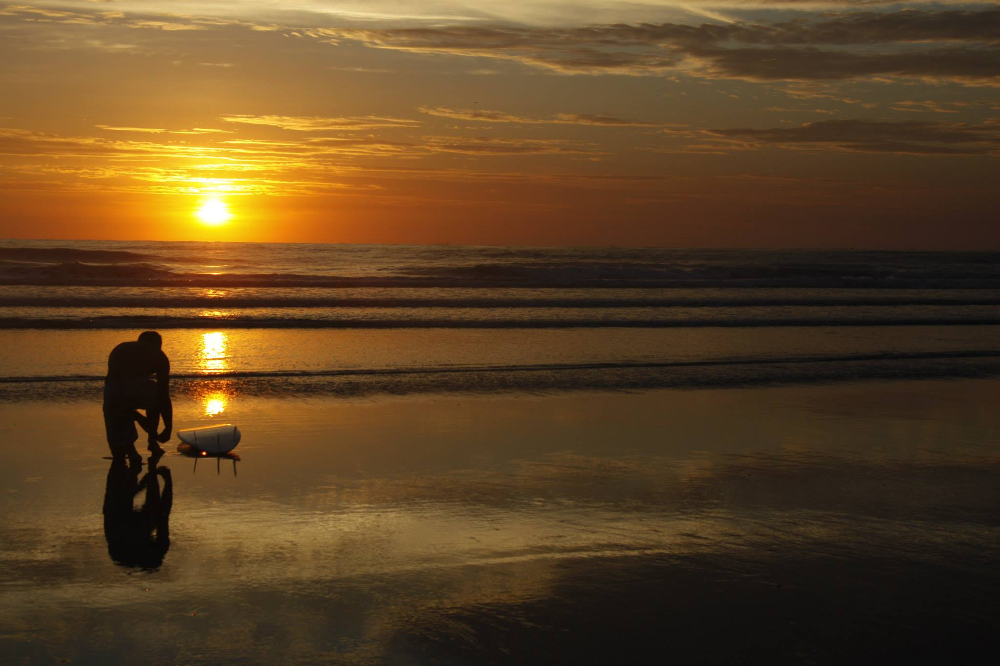
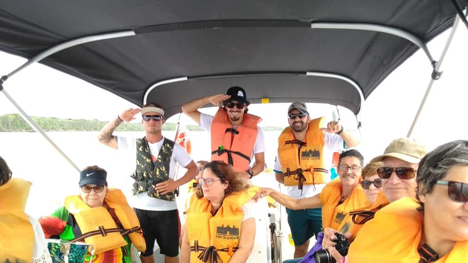
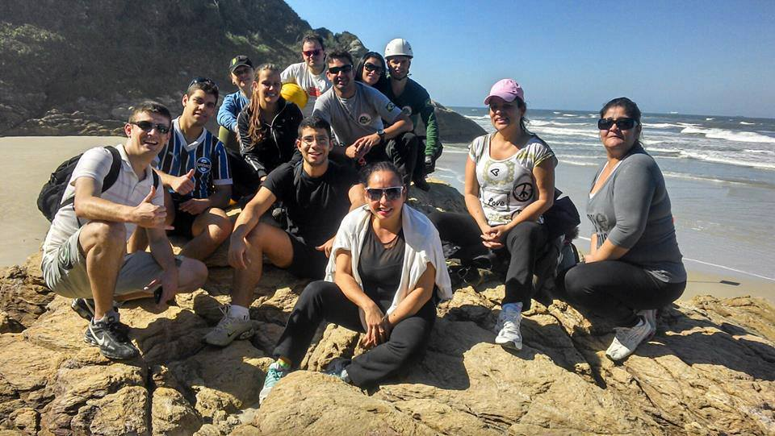
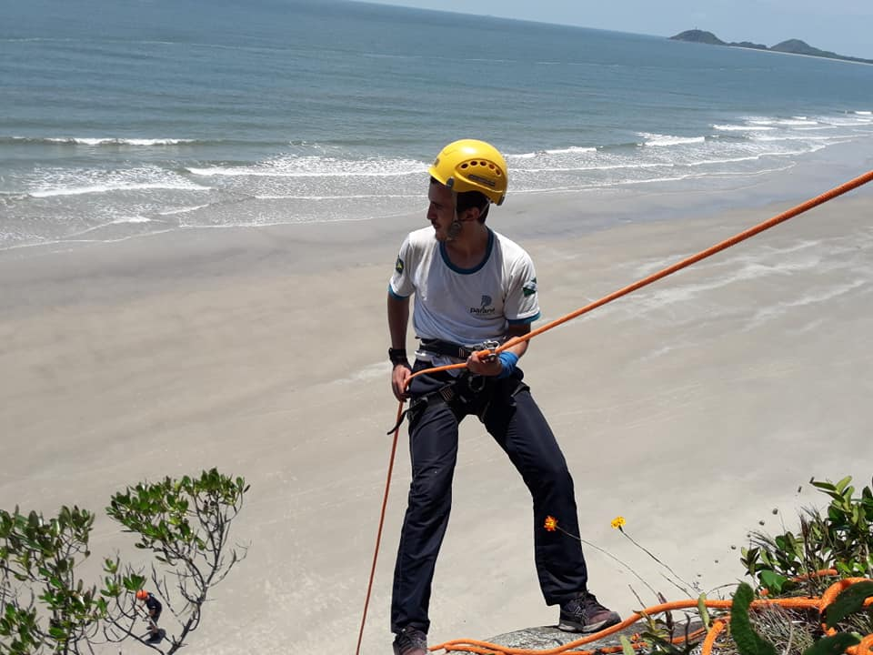
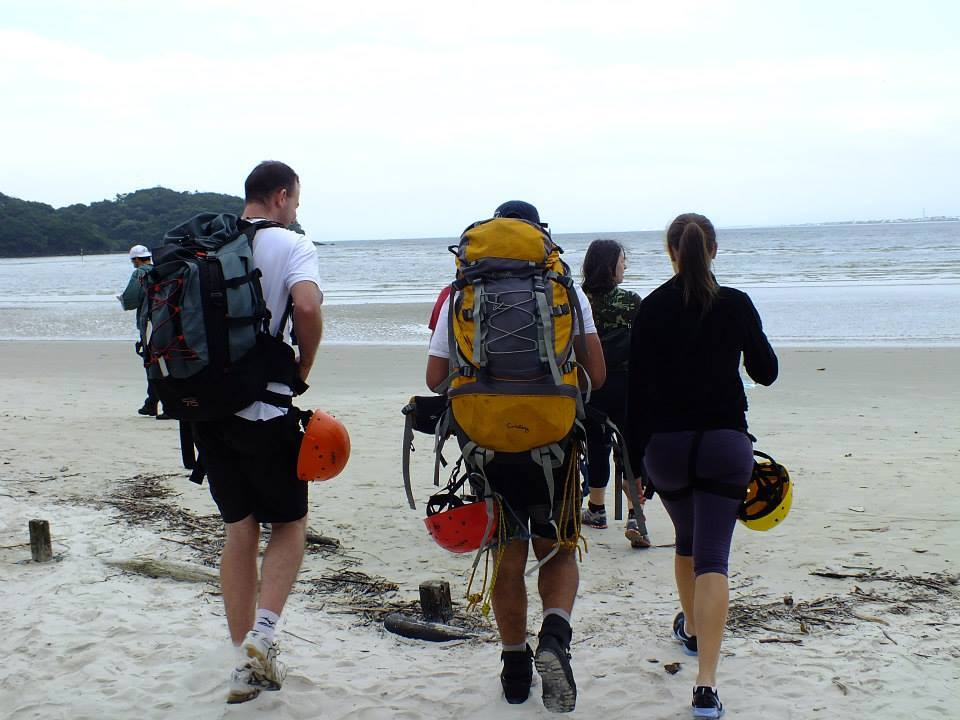
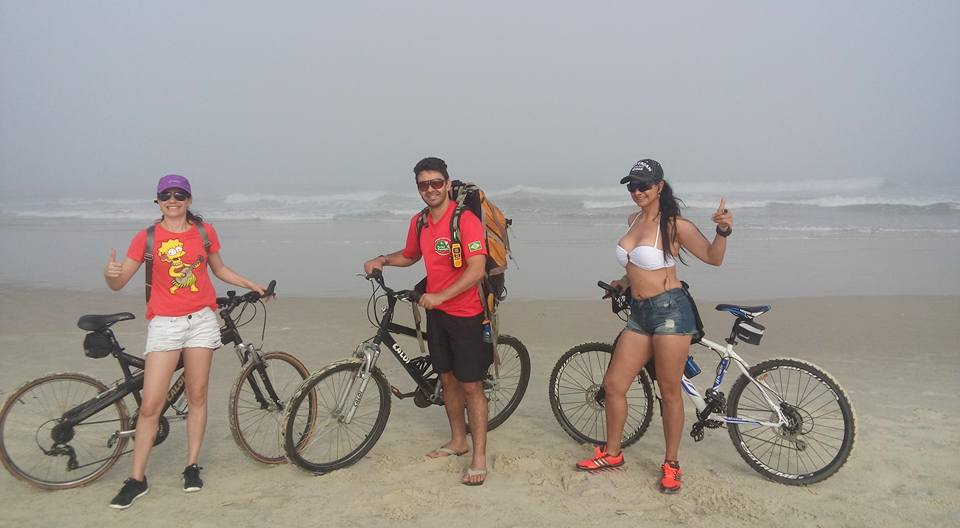
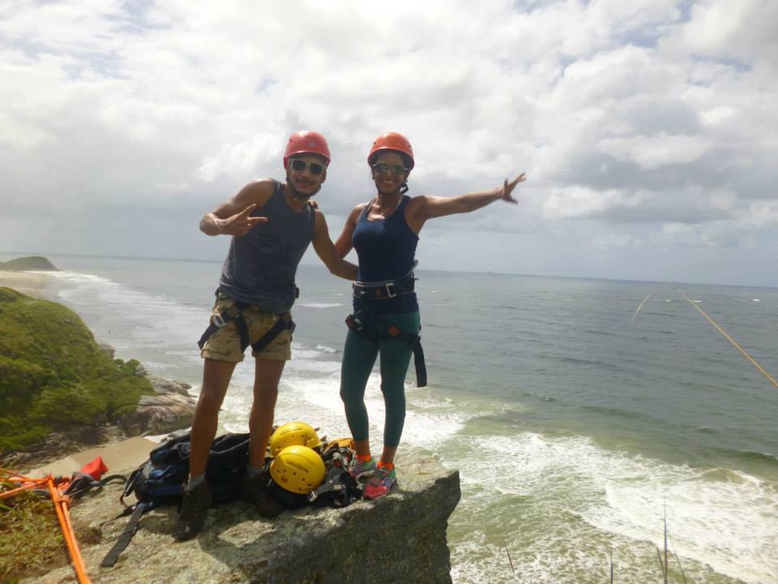
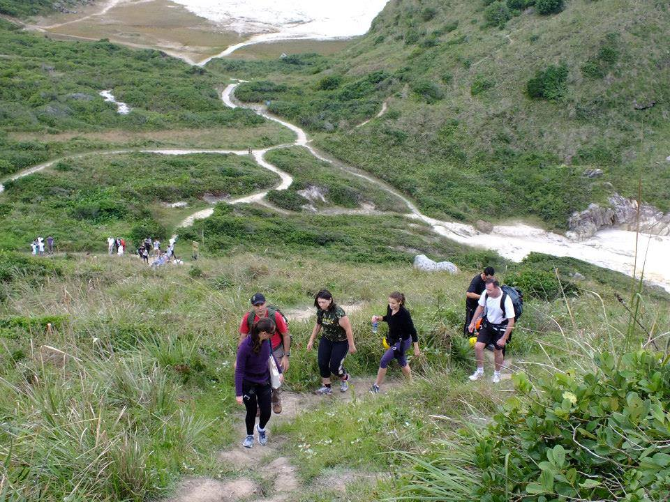

Detalhes do Roteiro
A Ilha do Mel, localizada no litoral do Paraná, é um destino ideal para quem busca aventura, natureza exuberante e atividades ao ar livre. Com suas praias paradisíacas, trilhas deslumbrantes e opções de esportes radicais, a ilha oferece experiências inesquecíveis para todos os gostos, nesse pacote, além de se hospedar na ilha, faremos o passeio pela Baía dos Golfinhos na Ilha do Mel é uma experiência imperdível para quem visita o litoral do Paraná. Durante o trajeto, é possível avistar golfinhos em seu habitat natural.
Vivencie a maior área preservada da Mata Atlântica ao atravessá-la pela Estrada da Graciosa durante este passeio! A saída de Curitiba será às 07h da manhã, seguindo até Pontal do Paraná, onde acontece o embarque para a Ilha do Mel. A travessia de barco dura cerca de 30 minutos e é emoldurada pelas belas paisagens do litoral paranaense. Na ilha, haverá oportunidade de conhecer os atrativos locais como o Farol das Conchas, a Fortaleza de Nossa Sra. dos Prazeres, além de tempo livre para banho de mar.
Translado privativo in/out saindo de Morretes e Curitiba;
Passeio náutico baia dos golfinhos;
1 noite de hospedagem com café da manhã;
Travessia Encantadas/Nova Brasília;
Descida de rapel com todos equipamentos necessários para prática.
Visita Farol das Conchas e a Fortaleza Nossa Senhora dos Prazeres;
2° dia – Retorno previsto para as 18h;
Atendemos grupos ou individual;
Tarifas
| N° de pessoas | Guia bilíngue | Adulto | Criança |
|---|---|---|---|
| 2 a 8 | Não | R$ 2.375.00 | R$ 1.980.00 |
| 2 a 8 | Sim | R$ 2.500.00 | R$ 2.250.00 |
Galeria de Fotos







